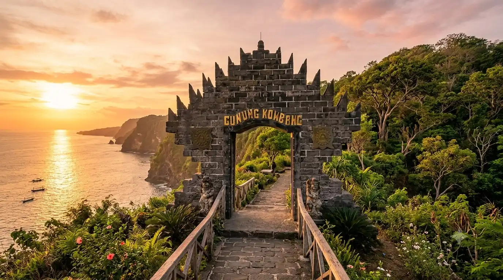
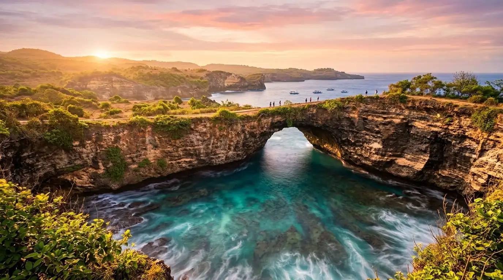
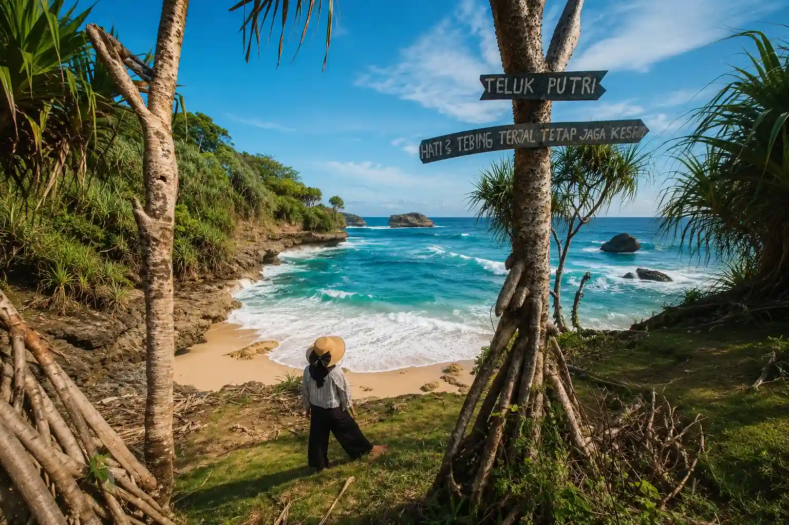

Detail Destinasi
Nikmati pesona legendaris pantai pasir putih berpadu tebing karang megah dan kekayaan ritual budaya yang magis.

Temukan Keajaibannya
Terletak di Desa Kedungsalam, Kecamatan Donomulyo, Kabupaten Malang, Pantai Ngeliyep merupakan salah satu destinasi wisata pantai legendaris di Malang Selatan. Pantai ini terkenal dengan perpaduan panorama alam yang luar biasa, mulai dari hamparan pasir putih yang lembut, deburan ombak laut selatan yang megah, hingga gugusan tebing karang yang kokoh. Nama "Ngeliyep" sendiri memiliki arti menarik yang menggambarkan suasana santai yang membuat setiap pengunjung merasa rileks hingga mengantuk saat menikmati embusan angin lautnya yang sejuk.
Atraksi yang Wajib Dikunjungi
Rasakan pengalaman liburan terbaik menikmati pesona alam dan tradisi di kawasan Pantai Ngeliyep

Pulau Gunung Kombang
Sebuah bukit karang eksotis yang menjorok ke laut dan terhubung oleh jembatan, menjadi tempat sakral sekaligus spot sunset terbaik.

Gugusan Tebing Karang Megah
Dinding-dinding tebing alam tinggi yang mengelilingi pantai, memberikan pemandangan dramatis saat dihantam ombak besar laut selatan.

Keindahan Teluk Putri
Area teluk berpasir putih lembut yang tenang dan tersembunyi, sangat cocok untuk area bersantai dan menikmati keheningan alam.
Jelajahi Area Pantai
Peta lokasi interaktif titik-titik penting dan fasilitas utama di kawasan wisata Pantai Ngeliyep
Informasi Penting Perjalanan
Semua hal mendasar yang wajib Anda ketahui sebelum berkunjung ke Pantai Ngeliyep
Waktu Terbaik Berkunjung
Bulan April hingga Oktober saat musim kemarau untuk menikmati panorama sunset terindah, atau saat bulan Maulid untuk melihat ritual budaya.
Cuaca & Karakteristik
Iklim tropis pesisir dengan karakteristik ombak khas Pantai Selatan yang cukup besar, namun memiliki kawasan teluk yang aman untuk dinikmati.
Mata Uang & Bahasa
Mata uang resmi yang digunakan adalah Rupiah (IDR). Bahasa komunikasi sehari-hari menggunakan Bahasa Indonesia dan Bahasa Jawa.
Tiket Masuk & Retribusi
Tiket masuk sangat terjangkau berkisar Rp15.000 per orang, sudah memberikan akses bebas ke area pantai utama, bukit, serta jembatan penyeberangan.
Tips Lokal & Wawasan Budaya
- Datanglah pada bulan Maulid (Jawa) jika Anda ingin menyaksikan langsung upacara adat Ritual Labuhan tradisional.
- Patuhi selalu rambu keselamatan dan jangan berenang di area luar teluk karena ombak laut selatan sangat kuat.
- Jaga kebersihan lingkungan dengan selalu membuang sampah pada tempat-tempat yang sudah disediakan pengelola.
- Gunakan alas kaki yang nyaman jika Anda berencana mendaki perbukitan karang menuju petilasan Gunung Kombang.
- Sempatkan untuk mencicipi hidangan kuliner ikan bakar khas laut selatan yang dijajakan di sekitar warung pantai.
- Sediakan uang tunai yang cukup untuk berjaga-jaga karena lokasi pantai ini cukup jauh dari pusat mesin ATM terdekat.